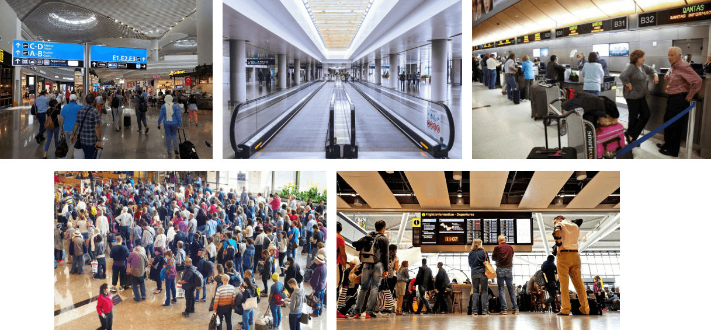
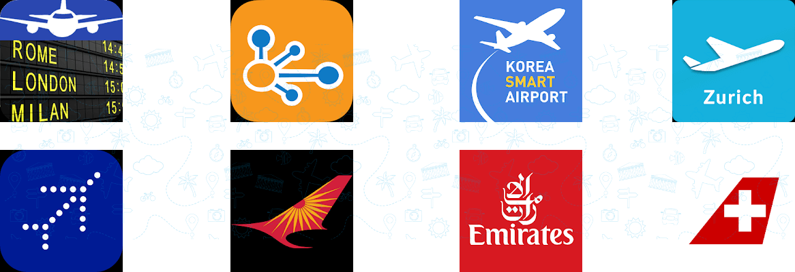

Airports are vital national resources. They serve a key role in transportation of people and goods and in regional, national, and international commerce. They are where the nation’s aviation system connects with other modes of transportation and where federal responsibility for managing and regulating air traffic operations intersects with the role of state and local governments that own and operate most airports. The smart phone, in particular, offers great potential to help the passenger customize the airport experience while at the same time reducing the stress associated with airports and travel. Improving the Customer Experience new and Innovative Technologies presents an overview of how technology is being used to provide critical information, new services, operational efficiencies, and twoway communication tools to passengers while giving passengers unprecedented control over their experience at the airport.
Passenger trends have changed since the adoption of smart phone and mobile technologies. In 2014, the airline telecommunications service reported in its Passenger IT Trends Survey that mobile device adoption among passengers is at a high point, with 81% of passengers carrying a smart phone, 43% carrying a laptop, 43% carrying a tablet, and 18% carrying all three devices (SITA, June 2014). The 2015 SITA’s 360-degree report noted that globally, 97% of passengers bring a mobile device with them on trips. Technology has transformed the way passengers experience the airport terminal (SITA 2015). A wide variety of self-service technologies have been implemented in many U.S. airports, including self–bag tagging, self–check-in, and self–gate boarding. Due to different security protocols, some airports abroad are more advanced in implementing automated bag-drop stations, home-printed bag tags, and 100% self-service passenger terminals to take full advantage of passing control of the check-in process to customers
Passenger trends have changed since the adoption of smart phone and mobile technologies. In 2014, the airline telecommunications service reported in its Passenger IT Trends Survey that mobile device adoption among passengers is at a high point, with 81% of passengers carrying a smart phone, 43% carrying a laptop, 43% carrying a tablet, and 18% carrying all three devices (SITA, June 2014). The 2015 SITA’s 360-degree report noted that globally, 97% of passengers bring a mobile device with them on trips. Technology has transformed the way passengers experience the airport terminal (SITA 2015). A wide variety of self-service technologies have been implemented in many U.S. airports, including self–bag tagging, self–check-in, and self–gate boarding. Due to different security protocols, some airports abroad are more advanced in implementing automated bag-drop stations, home-printed bag tags, and 100% self-service passenger terminals to take full advantage of passing control of the check-in process to customers
Interviewing the Traveller about their travel habits and to check that the problem we were trying to solve is actually a problem for the user or not.
Based on the photos journal and user interview
Studying and analyzing competitors can be much more enriching than it seems.These companies are possible competitors directly or indirectly. I chose them because the results in surveys and interviews pointed to them. In this project I decided to make a competitive and comparative benchmarking to the companies named below:
